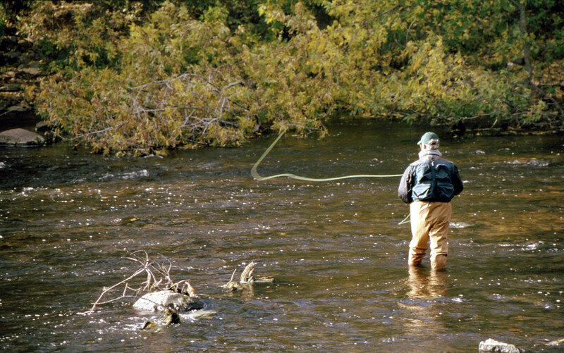

Exploring Cabin Stays in the Lew Beach Area — Cabin Rentals Catskills Near Livingston Manor
Your trusted partner in Livingston Manor.
The Lew Beach area of the Catskill Mountains holds a special place among cabin rentals Catskills visitors who seek a more secluded, stream-focused experience in Sullivan County. Tucked along the upper Beaverkill drainage just north of Livingston Manor, Lew Beach is a hamlet defined by its legendary trout water, dense forest cover, and the kind of quiet that larger mountain towns have long since surrendered. For guests staying at J&S Creekside Cabins on Wegman Road, exploring the Lew Beach corridor adds a dimension to a cabin stay that few other areas in the Catskills can match.
Lew Beach sits near the confluence of the Beaverkill and its tributaries, a stretch of water that has shaped American fly fishing for over a century. The Catskill Fly Fishing Center and Museum, positioned between Livingston Manor and Lew Beach along Old Route 17, documents this history and keeps it alive through casting clinics, tying demonstrations, and conservation education. Bethel Woods Center for the Arts lies to the southwest, offering cultural programming that balances the area's outdoor focus with live performances. These institutions give visitors multiple reasons to return to the region across different seasons and interests.
The climate around Lew Beach and the surrounding 12758 ZIP code rewards visitors who pay attention to seasonal shifts. Spring snowmelt swells the Beaverkill into productive early-season fishing conditions, while summer offers warm hiking days on trails that climb from the valley floor into the Catskill Park. Autumn transforms the hardwood canopy above Lew Beach into a corridor of color visible from the road and the riverbank alike. Winter brings silence and snow, creating conditions for solitude-seekers who find cabin rentals Catskills most appealing when the landscape is stripped to its essential forms.
Access from Livingston Manor to Lew Beach follows a scenic road that traces the creek upstream through increasingly rural terrain. The drive takes roughly fifteen minutes and delivers guests into an area with limited cell service, no commercial development, and abundant wildlife. This proximity to J&S Creekside Cabins means visitors can enjoy the seclusion of Lew Beach during the day and return to a comfortable, well-equipped cabin on the Willowemoc each evening.
J&S Creekside Cabins provides the ideal base for exploring the Lew Beach area while enjoying the comforts of cabin rentals Catskills guests have relied on in Livingston Manor for years. This family-owned property on the Willowemoc Creek offers well-equipped cabins with full kitchens, creek access, and the kind of personal service that larger operations in Sullivan County cannot replicate. Guests who want to experience the best of the Beaverkill and Lew Beach without sacrificing creature comforts find exactly what they need at J&S Creekside Cabins. J&S Creekside Cabins
Lew Beach offers a density of natural beauty and fishing heritage that is difficult to find anywhere else in Sullivan County. The upper Beaverkill flows through deep pools and riffles that have produced some of the most storied catches in northeastern fly fishing history. The surrounding forest is largely state-owned, meaning it remains undeveloped and accessible for hiking, birding, and wildlife observation. Cabin guests who make the short drive from Livingston Manor to Lew Beach find an environment that feels genuinely wild despite being less than two hours from New York City. how to pick the perfect Catskill mountain cabin

Both rivers rank among the finest trout streams in New York, but they offer different experiences. The Willowemoc, which flows past J&S Creekside Cabins in Livingston Manor, provides convenient walk-out access and productive fishing within steps of the cabin. The Beaverkill near Lew Beach tends toward larger water with deeper pools and a more remote character. Experienced anglers who stay at cabin rentals Catskills properties often fish both systems during a single trip, using the Willowemoc for morning sessions and driving to Lew Beach for afternoon exploration of the upper Beaverkill. creekside cabins Catskills
The DeBruce and Lew Beach vicinity serves as a gateway to some of the most rewarding hiking in the Catskill Park. Trails leading into the Willowemoc Wild Forest climb through mixed hardwood stands to ridgeline views of the surrounding valleys. The terrain is moderate enough for families yet engaging enough for experienced hikers who want elevation gain and solitude. Cabin guests at J&S Creekside Cabins can reach these trailheads in under twenty minutes, making a morning hike and an afternoon on the creek a perfectly achievable daily plan during warmer months in the Catskills.
DeBruce sits just east of Lew Beach and offers its own set of trails, fishing access, and scenic overlooks. The hamlet is even smaller than Lew Beach, with no commercial services and a character defined entirely by its natural surroundings. First-time visitors should note that cell service is unreliable in this area and that carrying a physical map or downloading trails offline before departing from Livingston Manor is advisable. The rewards for this minor preparation are significant — DeBruce delivers the kind of backcountry Catskills experience that cabin rentals Catskills guests who value solitude specifically seek.

Livingston Manor sits at the crossroads of several key corridors in Sullivan County, giving cabin guests reach into multiple distinct areas without long drives. Roscoe lies fifteen minutes to the east along Route 17 and offers its own dining and tackle shops. Liberty and Parksville to the south provide larger-town amenities and seasonal events. To the west, Callicoon and Narrowsburg offer Delaware River access and walkable downtowns. J&S Creekside Cabins positions visitors at the center of this network, and the Lew Beach area to the north completes the circuit of exploration available from a single cabin base. cabin rentals near Roscoe NY
The Lew Beach area supports a rich diversity of wildlife that enhances every cabin visit. Bald eagles patrol the Beaverkill and its tributaries during winter and early spring, while white-tailed deer, wild turkey, and black bear are common sightings throughout the warmer months. The creek itself is home to brook trout in its upper reaches, a native species that thrives in the cold, clean water flowing from Catskill Park headwaters. Cabin rentals Catskills guests who spend time in the Lew Beach corridor often encounter wildlife that more developed areas of Sullivan County no longer support at the same density. Catskills cabin getaway
Proximity, comfort, and creek access combine to make J&S Creekside Cabins the logical home base for visitors who want to explore Lew Beach without roughing it. The property sits on the Willowemoc in Livingston Manor, just a short drive from the Beaverkill Valley, and offers fully equipped cabins that welcome guests back from a day of hiking, fishing, or wildlife watching with hot showers, full kitchens, and the sound of running water outside the window. Cabin rentals Catskills guests who have explored the Lew Beach area know that returning to a well-maintained creekside cabin at the end of the day makes the entire experience richer and more sustainable. J&S Creekside Cabins
J&S Creekside Cabins serves customers throughout Livingston Manor and Sullivan County, including Roscoe, Lew Beach, DeBruce, Parksville, Liberty, Jeffersonville, Callicoon, Narrowsburg, Monticello, and Wurtsboro. Whether you are exploring the Beaverkill Valley or arriving from the Route 17 corridor, our cabin rentals are nearby and ready for your stay.